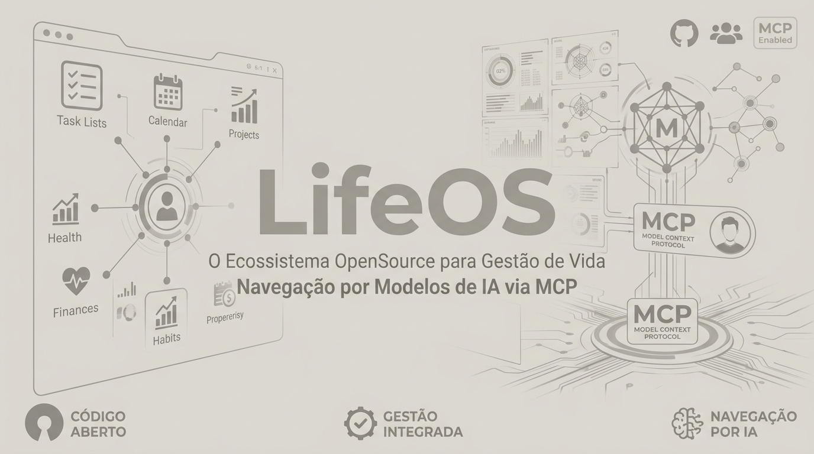
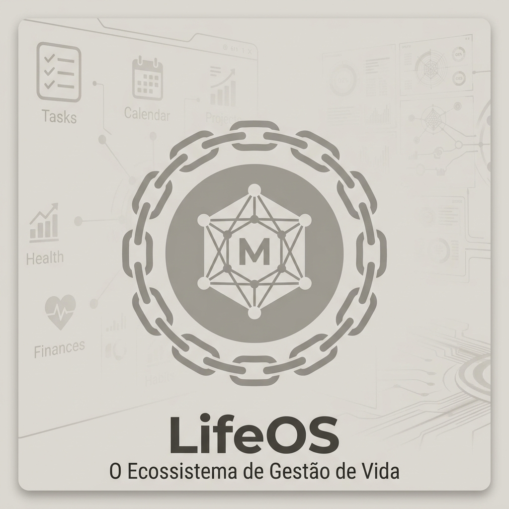

✦ ✦ ✦
LifeOS
acesso restrito · senha mestre
lembrar neste navegador
verificando sessão…
arquivo


LifeOS
gestão de vida · LifeOS
Finanças
Tarefas
Projetos
Notas
Manifestações
Calendário
Eventos
Tarefas
Adicionar
Linha do tempo · recentes & próximos
Finanças
Abrir
Saldo · evolução do mês
—
sem movimentação este mês
Entradas
—
Saídas
—
Fatura deste mês
—
Fatura projetada
—
Últimas transações
Tarefas
Adicionar
Abrir
Não iniciadas
—
Em andamento
—
Feitas
—
Kanban
Projetos
Novo projeto
Filtrar por status
Projeto
Status
Tags
Progresso
Ações
Notas
Abrir
Últimas notas
Por tipo
sem notas ainda
Por projeto
sem projeto vinculado ainda
Manifestações
Nova manifestação
—
—
Novo evento
Nome
Data
Tipo
Projeto
(opcional)
Cancelar
Salvar
Nova tarefa
Nome
Status
Tipo
Projeto
Data de entrega (opcional)
Descrição
(markdown, opcional)
Cancelar
Salvar
Novo projeto
Nome
Emoji (opcional)
Status
Tags
Cancelar
Salvar
Tarefas
Notas
📁
—
—
sem tarefas
0
não iniciado
0
em andamento
0
feito
Tarefas
Notas
Adicionar imagem
Nova manifestação
Nome
Status
Tags
Cancelar
Salvar